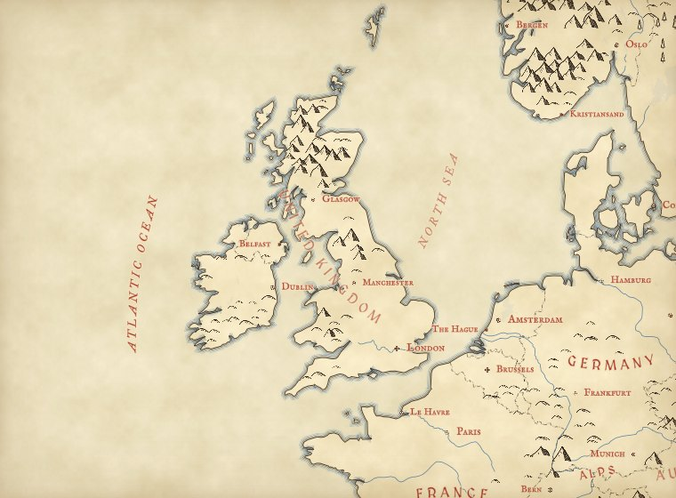
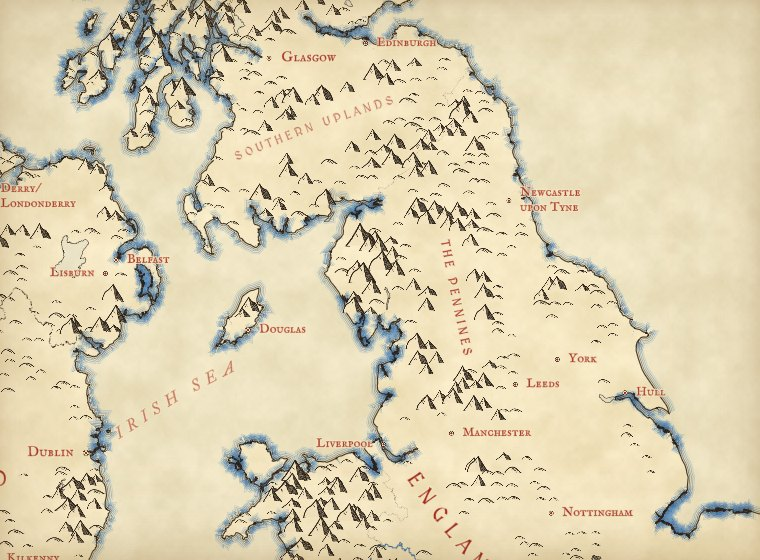
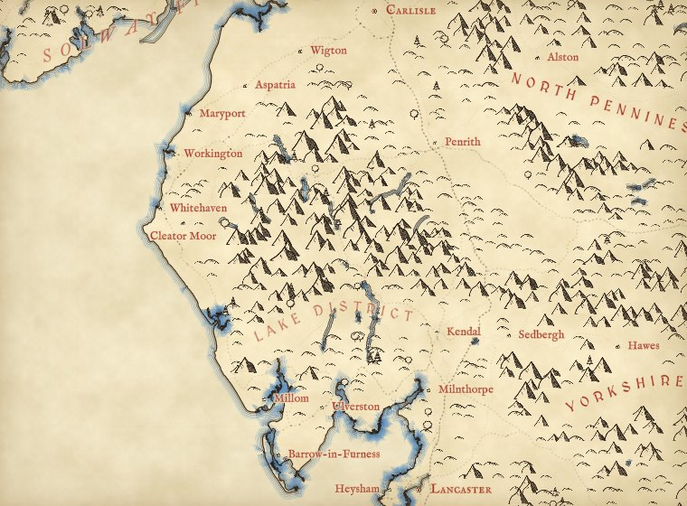
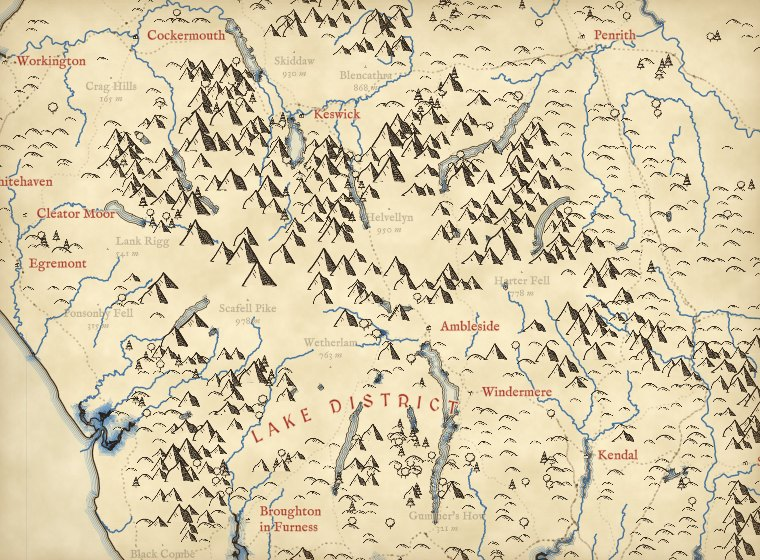
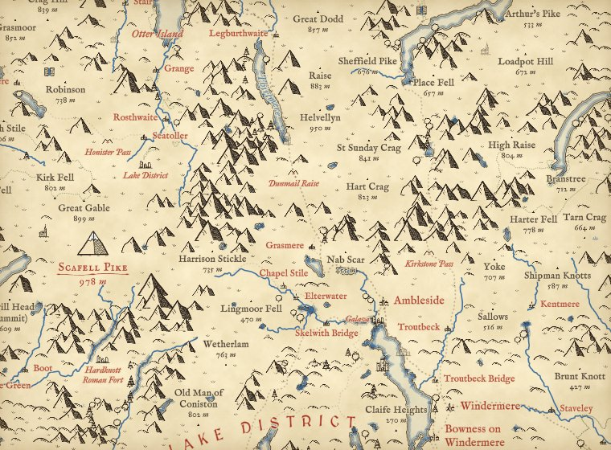
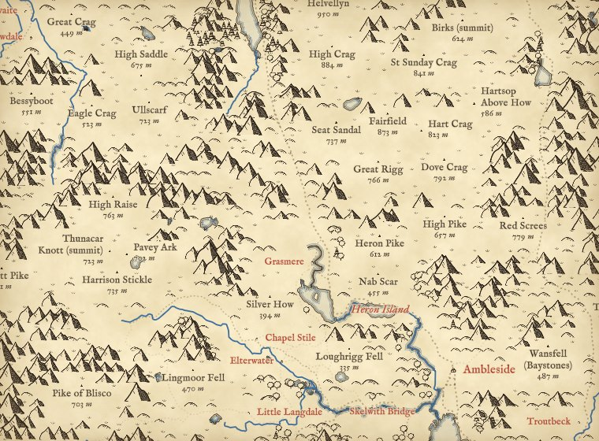
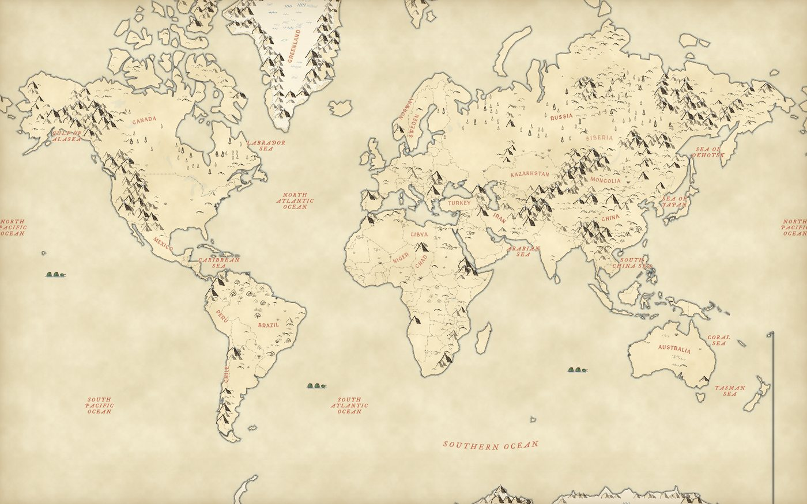

A map of everywhere, drawn in the manner of the hand-inked maps at the front of a fantasy novel: little peaks set on the real high ground, forests of tiny trees, rippled coasts, blue rivers and red lettering. Zoom from the whole world to a single Lakeland fell, and the same hand keeps drawing.
Maps in old books and fantasy novels have a look everyone recognises, made famous by the maps Tolkien drew for his books: rows of inked mountains, clusters of trees, coasts traced again and again with thin lines, and names lettered in red across the land. They are drawn by hand, so they only ever show one place at one scale. I wanted a Tolkien-style map of the whole world that works everywhere and at every zoom, built only from open data, so you can fly from the whole world to Britain to a single Lakeland valley and keep the same drawn feel all the way down.
Every mountain glyph below sits on the highest point of its patch of ground, sized by how far that point rises above the land around it. Every tree sits inside a wood mapped in OpenStreetMap. Nothing is traced from any artist's map; the drawing rules are mine, and the data do the rest. Start with Great Britain, then try the Lake District, the Alps or the Himalaya.
Map data © OpenStreetMap contributors (ODbL), tiles by OpenFreeMap using the OpenMapTiles schema. Elevation from AWS Terrain Tiles. Biomes from RESOLVE Ecoregions 2017 (CC BY 4.0). Heritage sites and summits from Wikidata (CC0). Ship lanes from the CLIWOC logbook database. Country and nation outlines for the lettering from Natural Earth and the ONS. Tap any name, peak or drawing for details; the square button at the top right fills the screen.
Far out, the world is a sheet of parchment with coasts in black ink, each one shadowed by thin ripple lines and a soft wash of blue, and country names lettered in red capitals along gentle curves. The great ranges show as rows of little peaks: each is drawn on the highest point of its patch of ground, and only where the land rises well above its surroundings.
Zoom in and the map does not switch to a different style. It adds. New, smaller peaks fade in between the old ones as each patch of ground splits into four; trees appear inside the woods, then marsh and moorland tufts; towns and villages get small ink symbols, rivers and lakes get blue names, and named fells get their heights. The pen width, the letter spacing and the number of coastal ripples all change smoothly with the zoom, so it reads as one drawing.

Zoom 4
Zoom 6
Zoom 8
Zoom 9
Zoom 10
Zoom 11The same map at six zooms, centred on the Lake District.
The same rules run everywhere. Oceans, seas, great ranges, deserts and basins are lettered by hand on curves (105 names beyond Britain and Ireland, from the Pacific to the Tian Shan), and so are 17 countries whose shapes defeat a fitted curve, such as Russia, Chile, Norway and Indonesia. No glyph is ever drawn on water: each tile reads the sea and lakes from OpenStreetMap and keeps every peak, tree and tuft off them, so a seamount or a speck of an island far out at sea never draws a lone mountain in the ocean.
Mountains only go where the land is rugged, not merely high. Each candidate peak is also tested on how steep the ground is close around it, so the Sahara, the Arabian interior, the Kalahari, the Great Plains and the high floor of the Tibetan Plateau stay bare however far they rise above the sea, while the Ahaggar and Tibesti keep their peaks. Between the ranges the world is drawn by biome, from the RESOLVE Ecoregions map: crescent dunes in the sandy deserts, sparse tufts on the steppe, savanna and shrub steppe, crowded round crowns and palms in the rainforest, small pointed conifers across the taiga, and pale blue hatching on the ice of Greenland and Antarctica.

The world at zoom 1.6. Rendered from saved OpenFreeMap and Terrain Tiles.
Old maps were never only land and water. Here, more than a quarter of a million heritage sites from Wikidata fade in as you zoom, the best known first (ranked by how many Wikipedia articles they have): castles, palaces and parliaments, cathedrals, churches and monasteries, mosques and temples, great houses, ruins, stone circles, standing stones, cairns, barrows and hillforts, battlefields, lighthouses, windmills and tall buildings, each as a small ink drawing with its name in red italic once there is room. In Britain and Ireland every one is kept; elsewhere the commoner kinds need a few more articles before they are drawn. About 150 world-famous monuments, from the Eiffel Tower and the Sydney Opera House to Machu Picchu and the Taj Mahal, have drawings of their own and show from the world view; Hadrian's Wall, the Great Wall, Offa's Dyke and hundreds of other walls, dykes and aqueducts follow their real lines in OpenStreetMap.
The great summits, each country's highest point and the famous peaks, get a finer drawing with snow and their name and height in red over a flourish. Every mountain above the snow line for its latitude (about 3,500 m in the tropics, falling towards the poles) gets a white cap with fine snow lines, and the highest rugged ground is hatched in pale blue for snowfields and glaciers. Capitals are drawn as walled cities, cities as clusters of roofs and spires, towns and villages smaller. From zoom 12 the towns fill in: little townhouses line both sides of the real streets, facing them, densest round a market square and church at the centre and thinning out with the buildings mapped in OpenStreetMap, and great cities keep a ring of wall and towers round the old core.
Far out, animals stand in their native ranges, as on a medieval map: elephants and lions in Africa, tigers and pandas in Asia, bison and moose in North America, kangaroos in Australia, penguins on the Antarctic coast. Whales gather where they really do, humpbacks off Hawaii and Tonga, blue whales off Sri Lanka and California, sperm whales off the Azores and Kaikoura. Sailing ships leave the great historic ports along lanes taken from real logbooks of 1750 to 1850. The busiest airports are drawn as flying machines in the manner of Renaissance notebooks, taking off along the runway, and a few hot-air balloons drift over places famous for them. The sea serpents and the balloons are decoration, and the key says so.
Mountains and hills. The page reads elevation tiles (the Terrarium encoding of the AWS Terrain Tiles) in a background worker. It lays a grid over the land whose cells are about 14 screen pixels at the zoom where they first appear, and each cell is split into four at the next zoom. In each cell it finds the highest point. That point gets a peak glyph if it rises far enough above the lowest ground in the cells around it. The threshold grows with the size of the cell on the ground: at zoom 2, where a cell spans about 237 km, a range has to rise about 477 m above its surroundings to earn a peak (measured on the coarse elevation tiles used that far out, which smooth the summits down); at zoom 11 in the Lake District, where a cell is about 311 m across, a crag needs about 130 m. Points that rise at least 40% of that get a rounded hill instead. In a great range, where every patch of ground is steep, the worker leaves out a mountain that has three or more higher mountains around it, so the Himalaya reads as ridges and summits and not as a solid mass of ink; in the Lake District this almost never happens. Because the highest point of a cell is also the highest point of one of its four children, every peak drawn at one zoom is still there at the next; new peaks fade in between them, and glyphs are drawn back to front so nearer ones overlap farther ones.
Ruggedness and biomes. Alongside relief, the worker measures the mean slope of the ground in the finest cells around each candidate peak. A mountain needs a slope above a bar that rises with the detail of the elevation tiles; in ecoregions named for mountains, such as the High Atlas, the Tibesti or the Andean puna, the bar is cut to 30%, so narrow ranges smoothed by coarse tiles still count, and in deserts, steppe, rainforest, taiga and tundra it is raised by half, so dissected plateaus are drawn as hills; on the Tibetan Plateau it is raised two and a half times, so only its ranges are peaked. Finally an ink cap keeps paper between the peaks: within each small patch of the map, mountains are taken coarsest and most prominent first until their summed footprints reach three quarters of the patch, or under half where a great range would otherwise be a solid mass of ink. In hill country such as the Lake District this trims fewer than one peak in ten; in the Himalaya it leaves ridgelines. The biome glyphs are scattered on the same nested grid as the trees, kept clear of mountains and water, and the rainforest and taiga glyphs give way to OpenStreetMap's own woods from zoom 7.
Forests, marsh and moor. For each tile the worker reads the OpenStreetMap land cover in the same vector tile the map uses, fills the woods, wetlands and heaths into a small mask, and scatters tree or tuft glyphs on a nested jittered grid inside it. Woods tagged as managed forest get mostly conifers; other woods mostly rounded trees.
Lettering. Country names follow a gentle arc fitted along the long axis of each country (Natural Earth outlines), and England, Scotland, Wales and Northern Ireland are lettered from ONS boundaries. The 62 names of uplands, lowlands and seas around Britain and Ireland, and 105 oceans, seas, ranges and deserts around the world, are placed by hand on curves, ranges along their flanks rather than on the crest. Each curve is cut, or drawn out a little past its ends, so that the name fits at every zoom. Everything else comes live from OpenStreetMap through OpenFreeMap. Names are placed first and never overlap each other; the glyphs then give way wherever a name sits, as a map maker would leave a gap for the lettering.
Heritage, towns and decoration. The heritage sites come from Wikidata queries for castles, palaces, seats of government, churches, cathedrals and abbeys, monasteries, great houses, ruins, prehistoric sites, parks, natural features and World Heritage Sites, joined with architecture, tall building, lighthouse, battle and monastery data sets. Each site gets a first zoom from its number of Wikipedia articles, and they ship as small files, one per zoom 6 tile, that the worker reads as you pan. The towns are drawn by the same worker from the streets, land use and buildings in the OpenStreetMap tile, with an occupancy grid so no two houses overprint and every name still comes first. The great rivers and lakes are named from Natural Earth out to zoom 9, and from OpenStreetMap closer in; named hills from Wikidata (every one in Britain and Ireland, the better known elsewhere) fill in where OpenStreetMap has no summit. Heritage names are thinned to about one per 140 by 90 pixels, the best known first, and every place name outranks them. Animals, whales, ships, balloons and airports sit in a small hand-made list with real places and ranges; the ships follow passages from the CLIWOC logbook database and are never placed on land.
Fonts. MedievalSharp for the capitals and the IM Fell types for everything else, all under the SIL Open Font License, turned into map glyphs with fontnik.
What this is not. It is a picture of open data, not a survey. It is inspired by the general style of Tolkien's hand-drawn maps and is not connected with or endorsed by the Tolkien Estate; it uses none of their artwork, places or lettering. Peaks are placed on the highest point in each grid cell, not on every named summit, and their size shows local relief, not exact height. Woods are only as complete as OpenStreetMap, and woods only appear from zoom 7 because the tiles do not carry them further out. Smaller seas, bays and regions beyond the hand-placed set come from OpenStreetMap as they are, lettered straight. Heritage sites are only as complete and as well placed as Wikidata, and a few large battles carry one arbitrary point there. The animals stand somewhere in their native range, not at a sighting; the drawn towns follow the real streets but each house is a symbol, not a mapped building. Named hills come from OpenStreetMap summits and, where it has none, from Wikidata; a hill missing from both stays unnamed.